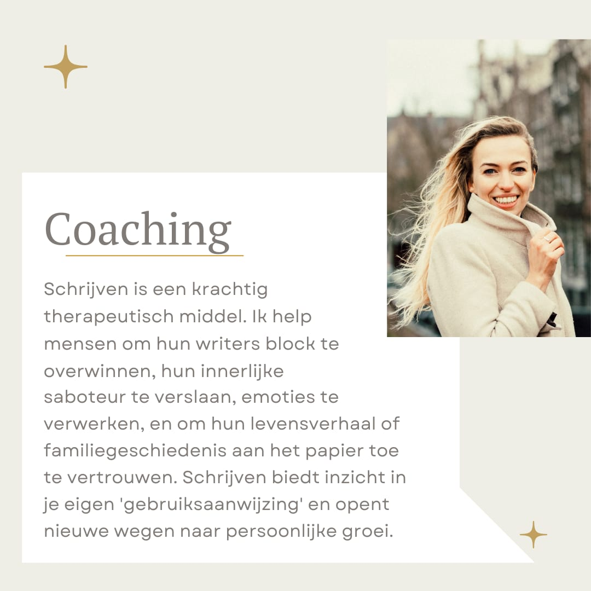
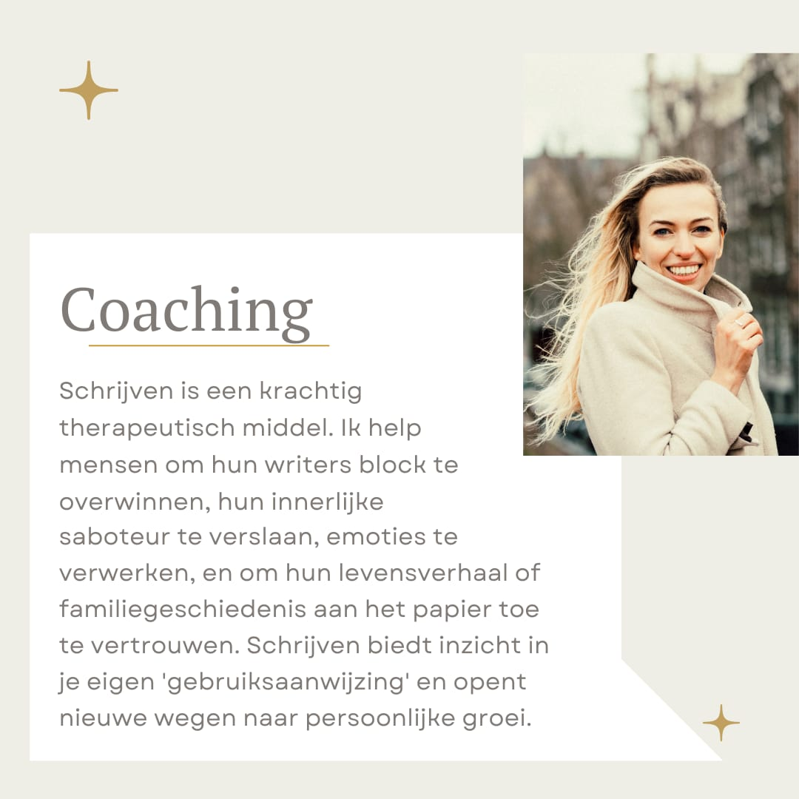

Creatief schrijven
Voor expats en reizigers
Deze module is speciaal ontworpen voor expats en reizigers die hun ervaringen in het buitenland op een creatieve manier willen vastleggen. Je leert hoe je levendige beschrijvingen maakt van nieuwe omgevingen, authentieke personages creëert gebaseerd op de mensen die je ontmoet, en hoe je culturele misverstanden en clashes kunt omzetten in boeiende verhalen. Daarnaast besteden we aandacht aan de unieke uitdagingen die het schrijven als expat met zich meebrengt, zoals het vertalen van culturele nuances en het vinden van je plaats in een nieuwe omgeving. Deze cursus helpt je om jouw unieke perspectieven en verhalen te verkennen en uit te drukken.
Je wordt aangemoedigd om diep in een nieuwe cultuur te duiken en de verschillende aspecten daarvan te onderzoeken en te beschrijven. Onze schrijfcoach staat bovendien klaar om je te begeleiden bij het omgaan met de emoties die kunnen opkomen tijdens het schrijven. Of het nu gaat om nostalgie, heimwee, of het gevoel van vervreemding, we helpen je om deze gevoelens om te zetten in krachtige verhalen die jouw lezers zullen raken.
Of je nu schrijft om herinneringen vast te leggen, anderen te inspireren met je verhalen, of om simpelweg je ervaringen te verwerken, deze cursus geeft je de tools om je reisverhalen tot leven te brengen.
Elke individuele cursus bestaat uit tien online bijeenkomsten van een uur en kost 500 euro. Het is ook mogelijk om losse lessen te boeken voor 55 euro per les.
Blogs
Op reis met Logos

Vallen voor de fiets
Het eerste wat ik deed was vallen. Niet bescheiden, een charmant kreetje slakend en hopend dat niemand het gezien heeft, maar pal voor de fietsenwinkel, waar klanten en personeel op de stoep stonden te praten. Ik lag onder mijn gloednieuwe e-bike. Een meter had ik erop gereden, nog geeneens. De hele week had ik me verdiept in tests van allerlei consumenten – en fietsersbonden, en had ik fietsenwinkels afgebeld om te vragen of ze toevallig nog die ene, bestgeteste e-bike in huis hadden. Dit zou de zomer van lange tochten door Nederland worden. Ik probeerde mijn gezicht te redden met een grap. ‘Ik heb vast het record van snelst vallende klant verbroken.’ Daarna fietste ik weg, met kloppend hart, zoals in 1966 een achtjarige Hetty op haar eerste Gazelle.
Ondanks dit slechte begin heb ik inmiddels diverse fietstochten gemaakt en staat de kilometerteller al op vierhonderd drieënzeventig. Het klapstuk vormde een tocht van honderdvijftig kilometer van Amsterdam via het Gooi naar Voorthuizen en terug door de Flevopolder via Almere (met tegenwind!) naar Amsterdam. Honderdvijftig kilometer, ik herhaal het nog maar even. Dat ik de dag daarna op apegapen met een dikke knie op de bank lag, meld ik terloops, tussen neus en lippen door.
Behalve dat ik genoot van het prachtige landschap waar ik in mijn eentje doorheen zoefde (De bossen bij Huizen! Het dorpje Blaricum! De polder bij Eemnes!), kwam ik op mijn e-bike ook tot bijzondere inzichten. Op de fiets denk je veel na. Dat kan niet anders als je alleen bent. Er ploppen veel vragen op. Van alles wat: triviale vragen, existentiële vragen, vragen over de liefde, praktische, beschouwelijke en ‘weetjes’ vragen. Het mooie van op de fiets zitten – zo ontdekte ik – is dat je de antwoorden niet op kunt zoeken, maar weer zelf moet bedenken. Dat zijn we niet meer gewend. Op alles heeft Google een antwoord. Zelfs als ik wandel haal ik om de haverklap mijn mobiel tevoorschijn om iets op te zoeken. En zo verleren we het om zelf een antwoord te formuleren en te houden van vragen zonder pasklare uitkomsten. Er is geen ruimte meer voor serendipity, de ongezochte vondst.
Al trappend op de pedalen vind ik het mijmeren terug, de meanderende gedachtes, de niet-doelgerichte associatieketens. Zo passeerde ik in een weiland een bord met een foto van een vogel en zijn naam: Tureluur. Was eerst die vogel er en daarna het woord tureluurs, zoals in ‘Ik word tureluurs’? vroeg ik me af. Of andersom? Werden we tureluurs van die vogel en noemden we hem daarom de Tureluur? Als je het antwoord wil weten, typ je het in bij Google, als je dat niet meteen wil, kun je hier een tijdje over doen en kom je op rijmpjes, grappen en vergelijkingen.
Ik dacht al fietsend ook na over mijn stamboom, die ik sinds kort aan het uitzoeken ben. Van mijn moeders kant ben ik op het spoor van de familie Mulder, die eind achttiende eeuw nog Muller of Mölder heette en vanuit Duitsland naar Nederland emigreerde. Zou die Duitse ‘Mulder’ als Prins Bernhard geklonken hebben? peinsde ik. Kon zijn vrouw hem wel verstaan? Waren er spraakverwarringen? En ik fantaseerde vervolgens over het leven van een verre bet-bet-overgrootvader en zijn bruid.
Wat ik hiermee zeggen wil, is dat je fietsend afstanden aflegt, zowel door prachtige landschappen, als in je hoofd. Het brengt je niet de kortste of de snelste weg, maar verder kom je zeker.

Over moed
Op de bodem van de Golf van Siam zit mijn meisje in lotushouding. Luchtbellen stijgen op uit haar mond. Adem uit, adem in, adem uit, adem in. Bubbelbubbel, in beheerst tempo. Van achter haar duikbril kijkt ze me aan. Ik besef dat ik een verschrikkelijke vergissing aan het maken ben. Duiken, dat leek me echt iets voor mij. Eindelijk een sport waarbij je alleen maar hoeft te blijven ademhalen en waarbij je, als je niets doet, beloond wordt met een schitterend onderwaterpanorama, gepresenteerd door gastvrije vissen. Mezelf rustig laten zakken, daar ben ik vast goed in. Toen ik dan ook ontdekte dat op het eilandje Koh Tao, onze vakantiebestemming in Thailand, duikles werd gegeven, was ik meteen enthousiast. Ik zou mijn duikbrevet gaan halen!
Anna voelde er niets voor. “Ik ga wel in het bootje zitten lezen als jij duikt”, zei ze. Ik vervloekte National Geographic, dat met rampenverhalen over haaien, meterslange kwal-tentakels en giftige pijlvissen haar onbezorgdheid had getorpedeerd. “Die zijn daar niet”, zuchtte ik geërgerd, “Kom op, zoek het avontuur, ben jij nou een meid van stavast?” “Nee.”
Op Koh Tao belandden we op een schitterend strandje met een koraalrif. Idyllischer kon niet. Fijn, wit zand en schuine, fotogenieke palmbomen. Glashelder water met tropische vissen die op onze komst zwommen te wachten. En natuurlijk, daar kwam ik voor, een duikschool. De eigenaar, een stoere Brit, noemde de prijs van Duikles-voor-beginners (the cheapest of the world) en vertelde verheugd dat wij duikles in het Nederlands konden krijgen. Alles zat mee. Toen we terugliepen aarzelde Anna: “Ik heb het gevoel dat ik een kans laat liggen als ik het niet doe”. Yes! “Dat is ook zo angst is een slechte raadgever je vindt het vast geweldig en als je het niet meer ziet zitten kun je altijd nog afhaken niet geschoten is altijd mis geef het een kans.” Anna zuchtte en gaf zich gewonnen. Later vertelde ze dat ze overstag ging omdat ze weinig fidussie had in mijn praktische vaardigheden en dat ze in de buurt wilde zijn om mij te kunnen redden.
De duikleraar was een Belg. Een behoorlijk onverstaanbare Vlaming, die ook nog eens in een poging om geruststellend te klinken alles binnensmonds bagatelliseerde. We hadden getekend dat de duikschool niet aansprakelijk zou zijn als er iets met ons zou gebeuren. Als we precies, maar dan ook precies deden wat ons verteld werd, als we goed luisterden en de orders van de duikinstructeur nauwgezet opvolgden, kon er niets misgaan, zo werd ons verzekerd. Dus alle mogelijke rampen die tijdens de theorieles de revue passeerden (zuurstofvergiftiging, decompressieziekte, longoverdrukletsel, gescheurde trommelvliezen, stikstofnarcose, luchtbel via de bloedbaan in de hersenen, coma, pijnlijk sterfproces, dood) zouden NIET gebeuren als we maar goed luisterden. Maar eh… ik versta het Vlaams niet zo goed. En ik versta al helemaal bagatelliserend Vlaams niet zo goed. “Allee, er is een levensgevaarlijk slang in zee, als je daardoor gebeten wordt sterf je een zeer pijnlijke dood, maar daar is er hier maar één van hè”. “Haaien, nee die komen hier meestal niet voor, er is in deze baai één babyhaai” (maar waar is de móeder!?!). “Ach, er zijn hier zwarte visjes, die iedereen altijd agressief aanvallen, maar dan steek je gewoon je zwemvlies uit en dan bijten ze daar in.” “Alleen de hele lelijke vissen en de hele mooie vissen kunnen gevaarlijk zijn” (maar mij is altijd verteld dat mooi en lelijk relatief is) . Ik deed mijn uiterste best om hetgeen verteld werd nauwkeurig in me op te nemen. Er waren ezelsbruggetjes om de volgorde van bijvoorbeeld het controleren van de duikuitrusting te kunnen onthouden: Bangkok Girls Are… wat waren Bangkok girls ook alweer? En waar stond de letter B ook alweer voor? Vest? Lood? Zuurstof? Maar dat begint allemaal niet met een B. Ik voelde hoe mijn hersencellen er één voor één de brui aan gaven. Alle luiken klapten dicht en ik nam niets meer in me op. Het enige dat ik nog wist was, dat als ik goed luisterde en de orders nauwgezet opvolgden… In de binnenkant van mijn hersenpan heerste complete duisternis. Zo voelt het dus om de slechtste van de klas te zijn. Anna luisterde aandachtig en raakte haar angst voor haaien kwijt omdat het allemaal nog veel erger kon misgaan.
Direct na de theorieles volgde de eerste praktijkles, in het zwembad. Voor we met onze duikuitrusting inclusief lood het water in plonsden moesten we onze vesten opblazen. Ha, die knop vond ik. Tsssss, mijn vest liep vol. We belandden allemaal in neutrale drijfstand in het water en formeerden ons rechtop drijvend, keurig in balans, rond de instructeur. Tenminste, dat was de bedoeling. Ik had blijkbaar mijn vest te hard opgeblazen en kon met geen mogelijkheid rechtop blijven. Ik stak een eind boven het water uit en de zware zuurstoftank trok me naar achteren. Verwoede pogingen om in evenwicht te komen mochten niet baten. Als een Michelin mannetje duikelde ik dwars door de aandachtig luisterende groep. Met zwemvliezen had ik ook geen ervaring dus die boden mij geen enkele hulp. Integendeel, in mijn pogingen om in een stabiele stand te geraken maaide ik met zwemvliesvoeten en armen al spetterspattend om mij heen. Ik geef toe, ik was een storende factor. Omdat niemand een krimp gaf en de humorloze instructeur mij ook geen hulp bood, werden mijn verende en rondtollende bewegingen steeds wanhopiger. Uiteindelijk belandde ik bovenop de instructeur. ‘Heb ik er zo een in mijn groep’, hoorde ik hem in stilte verzuchten.
Alle oefeningen deden we één keer en dan moest het goed zijn. Ik kon mijn zuurstofslang niet bovenlangs vinden, maar dat moest ik maar zo laten, zei de Vlaming. De oefening waarbij ik het water uit mijn masker moest halen lukte ook niet zo best, maar dat was geen punt. Bij de opdracht ‘zuurstof aan je buddie vragen als je dreigt te stikken’ was ik het gebaar vergeten. Maakte niet uit. De enige aanwijzing die ik bij elke mislukte oefening kreeg was: “Blijven ademhalen, Herty” (zo noemde hij mij). Herty was zo goed als opgegeven, type hopeloos geval, aan Herty zou niet veel verloren gaan.
Anna vertelde me na afloop van de eerste dag, dat ze het niet leuk had gevonden. Voor haar hoefde het allemaal niet meer. Een rotgevoel aan je oren en een groeiende angst voor wat er allemaal mis kan gaan. Waarom déden we dit? Ik pepte haar op: Laten we niet opgeven. Morgen is er weer een dag en we gaan er weer met frisse moed tegenaan. Morgen zouden we immers op volle zee gaan duiken en echte vissen zien. Niet die te lelijke of te mooie, ook niet die zwarte agressieve, maar gewoon leuke, kleurige, vriendelijke vissen. “Ja ja”, twijfelde Anna.
De volgende ochtend was Anna stil en uit haar hum. Ik probeerde de moed erin te houden en vertelde dat de zee voor duikers veel minder moeilijk is dan een zwembad. Dat had ik namelijk opgevangen. Bovendien waren Anna en ik buddies en buddies laten elkaar nooit in de steek.
Toen we vlak voor het grote zee avontuur elkaars duikuitrusting controleerden, liep de Instructeur het niet na. Bangkok Girls Are… Are… Anna en ik controleerden de slangen en hielpen elkaar zo goed en zo kwaad als het ging. Met lood in onze schoenen en om ons middel sjokten we naar de kustlijn. Ik liep voorop en hoorde Anna aan de instructeur vragen: ‘Heb ik haar zuurstoffles nou open – of dichtgedraaid?” Waarop ik wederom een onheilspellend mompelende geruststellening hoorde: ”Links is open, rechts is dicht”. “Ja maar ik heb hem naar bóven gedraaid”. Stilte. Geen controle. Gewoon doorlopen naar zee. We snorkelden met onze zware duikuitrusting van de kustlijn af. Onderweg zagen we de babyhaai. En nou maar bidden voor een ontaarde (ontzeede) haaienmoeder. Bij een boei moesten we aan een touw afdalen. Ik zag de andere cursisten een voor een onder water de diepte in verdwijnen. Nu wij. Anna ging eerst, toen ik. We zakten een meter, nog een meter, nog een meter, en verder….
En nou zit Anna ongelukkig op de bodem van de zee. Ze doet in lotushouding haar best om niet in paniek te raken. “Niet in paniek raken, dat is levensgevaarlijk!” was ons immers nadrukkelijk op het hart gedrukt. Ik zie haar zitten, mijn dappere dochter en ik denk: ‘Ik lijk wel hartstikke gek. Ze zit daar om mij, door mij, voor mij’. Met duim, wijs – en middelvinger vorm ik een rondje en gebaar ik of het oké met haar is. Het antwoord is: zozo. Mijn hart breekt. Alles lijkt groter onder water, zo ook mijn schuldgevoel. Ineens heb ik verschrikkelijk te doen met Anna met haar avontuurlijke, walgelijk optimistische moeder. Met Anna die liever in een bootje een boekje zit te lezen. Anna die door de plannen van haar moeder op de bodem van de Golf van Siam is beland. ‘Het is nog niet te laat’, bedenk ik. ‘We gaan nu naar boven en kappen ermee’. Ik gebaar naar de instructeur dat we naar boven willen. Maar dat gaat zomaar niet. Hij grijpt me driftig bij mijn pols en trekt me mee. ‘Kijk om je heen, kijk naar de vissen’, gebaart hij ongeduldig met twee vingers wijzend naar zijn brillenglazen en vervolgens naar de omgeving. Kijk!. Maar ik kijk niet naar de vissen, ik kijk achterom en zie Anna nog steeds in lotushouding. Als ik me probeer los te rukken, trekt hij me mee. En ik mocht mijn buddie niet in de steek laten, laat staan mijn dochter! Ik raak steeds verder van haar af. Ik doe een poging om naar Anna te zwemmen, maar de instructeur trekt me weer terug. Nu is wat mij betreft de maat vol. Ik geef hem een onderwaterpor en probeer blubblublub met het beetje gezag dat ik in me heb duidelijk te maken dat er met mij niet te spotten valt en dat als ik wil naar boven wil, dat ook gebeurt. Al mijn onderwater autoriteit haal ik uit de kast en ja hoor, gelukkig… Geërgerd geeft hij het teken, dat iedereen naar boven moet. Eenmaal met het hoofd boven water deel ik mee ik dat het wat Anna en mij betreft einde oefening is en dat de duiksport het voortaan maar zonder ons moet stellen. De instructeur explodeert. Nog nooit is iemand zo tegen me tekeer gegaan en ditmaal versta ik hem wél. Ik hoor dat ik niet mag stoppen, dat ik over mijn grenzen moet gaan. “En toch kappen we ermee”. Nog zwaarder geschut: “Herty, dit is nog niets, ge zijt hier toch niet bang voor, dit heb ik al driehonderd keer gedaan en nog nooit meegemaakt, ge verpest het allemaal!”. “Oké, ik ben een watje en een loser en we zwemmen terug naar de kant. Kom, An”. En dat doen we, een boze, tierende instructeur achterlatend.
Als we ver genoeg uit het zicht zijn steken Anna en ik opgelucht onze duimen naar elkaar op. Anna straalt: “Dat je dat durft, dat je zo tegen die kwaaie schreeuwende instructeur in durft te gaan.” “Natuurlijk. Wat hebben we met die man te maken? Hij kan hoog en laag springen, maar als we iets niet willen, dan doen wij Kleinlogen dat niet”. Anna lacht. Even ben ik weer haar held. Te veel eer, besef ik met nog een vaag schuldgevoel, want juist ik had haar in deze situatie gebracht. En ik had gestunteld, gefaald, een modderfiguur geslagen. Het maakt allemaal niet meer uit. Het avontuur is over, we hebben samen weer iets beleefd.
We zwemmen een tijdje hand in hand snorkelend terug naar de kust. We wijzen bewonderend naar de vissen en het koraal. Dan komen we even boven water. Ik haal mijn snorkel uit mijn mond. “Weet je, Ik voel me helemaal geen watje, ook geen loser.” “Dat ben je ook niet.” “Soms is het dapper om toe te geven dat je bang bent”. Anna knikt. “Zo is dat. En ik ga nooit meer duiken, als je dat maar weet.’ “Nooit meer duiken, schat. Nooit meer.”

Brutale wolven
“Wolfwaarschuwing van kracht,” stond er in grote, schreeuwerige letters op de oude, rafelige poster die aan een kromgegroeide boom hing. Het was een koude, mistige ochtend in het regenwoud van Canada, en de poster hing daar als een somber voorteken aan het begin van het pad waar we aan stonden. “Oh,” zei ik zachtjes, terwijl een rilling over mijn rug liep. Volgens de poster was er een roedel wolven actief in het gebied, en deze wolven gedroegen zich zo brutaal dat ze zelfs niet meer bang waren voor mensen. Er waren recent aanvallen geweest. Mijn hart klopte als een hamer tegen mijn ribben terwijl ik de waarschuwingen las. ‘Als je oog in oog komt te staan met een wolf,’ las ik, ‘hou dan oogcontact! Draai je nooit om, laat staan dat je wegrent.’
En als de wolven je zouden benaderen, moest je stokken en stenen naar ze gooien. En dan, het allerergste: ‘Als niets anders helpt, vecht dan.’ Oh, hoe ik hoopte dat het nooit zover zou komen!
Ik had me mentaal voorbereid op beren. In mijn hoofd had ik al duizend keer nagedacht over hoe ik met een beer zou omgaan: je maakt jezelf groot, je zwaait met je armen, je schreeuwt als een maniak – en als dat niet werkt, dan had ik altijd nog de bearspray die we die ochtend hadden gekocht. Maar wolven? Wolven waren anders. Sluw, met scherpe tanden en een gevaarlijke intelligentie, zoals de wolven in de sprookjes die oma altijd vertelde.
We hadden ook kleine metalen belletjes aan onze veters gebonden. Ons was verteld dat je het meeste risico loopt als je dieren verrast, en deze belletjes zouden ze horen aankomen. Maar wat we pas na de wandeling ontdekten, was dat deze belletjes juist nieuwsgierigheid wekken bij beren en wolven in plaats van hen af te schrikken…
We begonnen aan onze wandeling, het pad op dat zich als een kronkelige slang een weg baande door het regenwoud. Het was geen gewoon pad – het was een houten pad, een beetje verhoogd boven de grond, alsof we op een smalle plank in een sprookjesachtig bos stonden. Het leek wel een decor, met de natte, glinsterende varens die ons omringden als een groen gordijn, en boven ons de torenhoge bomen die in de mistige lucht verdwenen. Ik had nooit geweten dat er zo’n soort regenwoud in Canada te vinden was.
Terwijl we liepen, hoorden we allerlei vreemde geluiden. Het leek alsof een heel orkest van tropische kikkers en vogels zich had verzameld om ons te begeleiden op ons avontuur. Maar toen zag ik mijn moeder, die met haar bergschoenen piepte bij elke stap die ze zette, en ik moest lachen. Het was niet minder spannend daardoor, maar het haalde wel een beetje de scherpe kantjes van mijn angst.
Het pad was kort, maar het voelde alsof we door een betoverd bos wandelden. Gelukkig waren er geen levensbedreigende ontmoetingen met wolven – geen enge ogen die ons vanuit de struiken gade sloegen, geen harige, grommende figuren die plotseling tevoorschijn sprongen. Toen we het pad verlieten, voelde ik een mengeling van opluchting en een tikkeltje teleurstelling, alsof ik een avontuur had gemist.
Anna heeft gewoond in Engeland, Schotland, Canada, Nederland en Turkije, waar ze een schat aan verhalen heeft verzameld
Profiel van de schrijfcoach

 
